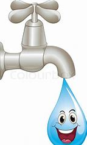

EVERY DROP OF WATER COUNTS
70% of the world's surface is covered by water, 97.5% of that is salt water.
Only 2.5% of that is freshwater,almost 68.7% is frozen in ice caps and glaciers
Only 1% of the total water resources on earth are available for human use.
